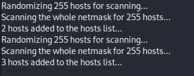

6.2 Fortificación de la red en GNS3
1. Introducción
En este capítulo se va a trabajar con el emulador GNS3 que soporta configuración y emulación de dispositivos de interconexión como routers mikrotik, switches cisco, etcétera e incorporar hosts como Linux, MAC OS, Windows, etcétera.
2. Esquema de Red
El esquema de red en el que se basa el capítulo se puede observar en la siguiente figura, donde se han realizado las siguientes configuraciones:
- Mikrotik
- Creación de vlan 2 (aula 2), valan 3 (aula 1), vlan 5 (profesorado), vlan 10 (dirección) y vlan 100 de gestión.
- Servidores dhcp para servir ip's en las 4 vlan's (la vlan de gestión tiene direccionamiento estático).
- Switch Cisco:
- Se han configurado los puertos del switch de la siguiente manera (acceder a gitub).
3. Posibles ataques en capa 2 y 3
En la siguiente tabla, se identifican los tipos de ataques que podemos recibir en nuestra red diferenciados por las capas 2 y 3 del procolo tcp/ip.
|
Capa |
Ataque |
Soluciones |
|
2 |
ARP spoofing ARP poisoning VLAN hoping |
Asociar MAC a puerto (port-security). Deshabilitar puertos no utilizados. Monitorizar los cambios de MAC en los puertos. Monitorizar el volumen de paquete ARP request, ARP broadcast. Deshabilitar protocolo DTP. Cifrado de comunicaciones (intercepta pero tiene valor). Cambiar la VLAN nativa por defecto (1). |
|
3 |
ICMP flooding |
Desactivar protocolo ICMP. |
Tabla 1. Tipos de ataques por capas.
3. Ataque ARP poisoning (Capa 2)
Los ataques ARP Poisoning o también conocidos como ARP Spoofing, son uno de los ataques Man in the Middle más conocidos y más peligrosos que podemos encontrarnos en las redes cableadas e inalámbricas en la capa 2. Si un ciberdelincuente realiza correctamente este ataque, será capaz de interceptar todas las comunicaciones entre la víctima y la conexión a Internet, además, con técnicas algo más avanzadas, podría incluso modificar el tráfico al vuelo e incluso «levantar» la seguridad del protocolo HTTPS para convertirlo en HTTP y vulnerar nuestra seguridad.
En la siguiente imagen, se puede observar el resultado de un ataque ARP Poisoning cuyo resultado es la obtención las credenciales de acceso a una plataforma web.
Figura 1. Obtención de las credenciales de acceso a una plataforma web.
Para realizar un ataque MiM del tipo ARP Poisoning, se ha utilizado un equipo Kali con la finalidad que se establezca como gateway del equipo Objetivo y de ese modo., pueda interceptar todo el tráfico que se dirija hacia el exterior (internet).
El equipo Kali está conectado a una interfaz del switvh donde se encuentra el equipo objetivo. Para este caso, el equipo objetivo es un PC del Aula 1, de un centro educativo.
3.1 Escenario
- Router Mikrotik con salida a internet.
- Switch Cisco que conecta la red del aula 1 con el router Mikrotik conectado a internet.
- Máquina objetivo PC_Alumando_A1_1 conectada al switch del aula 1.
- Equipo atacante Kali conectado al switch del aula 1, en concreto, a la interfaz del switch Gi1/2. La interfaz del switch Gi1/2 está configurada de la siguiente forma:
- Switch(config)#interface Gi1/2
- Switch(config-if)#switchport access vlan 100
- Switch(config-if)#switchport mode access
- Switch(config-if)#media-type rj45
- Switch(config-if)#negotiation auto
Para realizar el ataque MiM con el equipo Kali, vamos a utilizar el paquete ettercap.
Ettercap es una herramienta que permite mediante el protocolo ARP, engañar a los equipos, es decir, (ARP Poisoning) va a inundar la red diciendo que la MAC de la interfaz de red del router mikrotik que conecta con la interfaz del switch es la suya. De esta forma, todos los equipos cambiarán las tablas de arp con esta modificación.
1
En primer lugar, ejecutamos ettercap con la opción -G (entorno gráfico).
sudo ettercap -G
2
Si se accede al equipo objetivo y vemos su tabla arp (hacemos un ping a internet para generar la tabla), el resultado (ver imagen inferior) es la dirección MAC de la interfaz del router mikrotik de este segmento de red y que para este caso es: 0c:d0:c0:7f:00:02.
3
A continuación, se realiza el ataque ARP Poisoning para que cambie la MAC del gw del equipo objetivo por la MAC del equipo atacante (Kali). Para ello, hay que decirle que escanee el dominio de broadcast al que está conectado pulsando el icono Lupa.
El resultado es el siguiente:
|  | Si pulsamos sobre el icono |
4
De la lista que aparece, hay que seleccionar la ip/mac de la interfaz del router mikrotik (para este caso es 192.168.1.1) y pulsamos el botón add target 1. Después, hay que seleccionar de la lista la ip/mac del equipo objetivo (PC_Alumnado_A1, para este caso es 192.168.1.254) y pulsamos add target 2.
| Seleccionar Objetivo 1. Interfaz de red del router que conecta con la interfaz trunk del switch. | Seleccionar Objetivo 2. Interfaz de red del equipo objetivo (PC Alumno 1). |
|
El resultado es el siguiente:
|
|
5
A continuación, hay que pulsar sobre el icono de la tierra y seleccionar 'ARP poisonong….', de ese modo, se podrá modificar la tabla arp del equipo objetivo y poner la del equipo atacante (kali). Aparace una ventana (figura central) donde hay que pulsar OK. La salida es la que se puede observar en la figura inferior derecha.
6
Si accedemos al equipo PC_Alumnado_A1, veremos que le ha cambiado la MAC de la ip de la tabla arp por la del kali (figura derecha). En la figura central se tiene la MAC antes de realizar el ataque y la figura de la derecha la MAC después. Se puede comprobar que la MAC corresponde a la del equipo Kali (figura izquierda).
| Datos tcp/ip del equipo Kali. | Datos arp del equipo objetivo antes del ataque. | Datos arp del equipo objetivo después del ataque. |
En el siguiente vídeo, se describe qué hace un ataque ARP poisoning en un mismo dominio de broadcast de una red de un centro educativo, en concreto, en un aula segmentada con VLAN's, y cómo se hace con la popular distribución Kali Linux
Vídeo 1. Ataque ARP Poisoning Red VLANs.
4. Port Isolation (protected)
Los puertos protegidos tienen estas características:
- Un puerto protegido no reenvía ningún tráfico (unidifusión, multidifusión o difusión) a ningún otro puerto que también sea un puerto protegido, por lo que no hay comunicación entre ellos.
- El tráfico de datos no se puede reenviar entre puertos protegidos en la Capa 2; solo se reenvía el tráfico de control, como los paquetes PIM, porque estos paquetes son procesados por la CPU y reenviados en el software. Todo el tráfico de datos que pasa entre los puertos protegidos debe reenviarse a través de un dispositivo de capa 3.
- El comportamiento de reenvío entre un puerto protegido y un puerto no protegido continúa como de costumbre, es decir, los puertos protegidos pueden comunicarse con los que no están protegidos.
Debido a que una pila de conmutadores representa un solo conmutador lógico, el tráfico de Capa 2 no se reenvía entre ningún puerto protegido en la pila de conmutadores, ya sea que estén en el mismo conmutador o en diferentes conmutadores de la pila.
Para poder aplicar seguridad en un puerto del switch (ejemplo el Gi0/1) es necesario que el puerto esté en modo access (excepto en puerto trunk).
En primer lugar seleccionamos el puerto a configurar:
Switch(config)#conf interface Gi0/1
A continuación, se configura el puerto en modo access:
Switch(config-if)#switchport mode access
Por último, para establecer un puerto protegido hacemos:
Switch(config-if)#switchport protected
Para establecer un puerto NO protegido hacemos:
Switch(config-if)#no switchport protected
Referencias:
5. Fortificación para mitigar ataques
La segmentación de las redes pos sí solas no evitan ciertos ataques MiM. Es necesario realizar algunas configuraciones en los equipos de comunicación ya sean de capa 2 o capa 3 para mitigar los mismos.
Un mismo dominio de broadcast debería tener configurado lo siguiente:
- Separación de los equipos en VLANs.
- Configuración de port isolation en los switches
Configurando lo anterior, ¿se evitarían los ataques de inundación de la tabla MAC del switch de aula con el port isolation o se necesitaría alguna cosa más?.
La respuesta es que no se evitaría por lo que se tendría que realizar alguna configuración más, relacionada con la restricción del número de direcciones MAC admisibles dentro de las opciones de seguridad de puertos en el switch.
En los switch Cisco se tiene la directiva port-security.
switch(config-if)#switchport port-security
Con el puerto configurado así, por defecto, la primera MAC que aprenda (la de la primera trama que pase por ahí) será la única que se podrá usar, hasta que se desconecte, entonces la que aprenda después se convertirá en segura. Se puede cambiar para que aprenda más de una como segura (sólo tiene sentido en un puerto conectado a un hub u otro switch).
Para que en cuanto aprenda una dirección, no permita cambiarla.
switch(config-if)#switchport port-security mac-address sticky
Otras opciones de port-secuity son violation y maximum. Para indicar el número de direcciones seguras:
switch(config-if)#switchport port-security maximum [Número]
o asignar direcciones estática MAC a los puertos:
switch(config)#mac-address-table static dirección_mac interface nº vlan nombre_vlanObra publicada con Licencia Creative Commons Reconocimiento No comercial Compartir igual 4.0